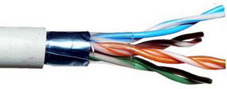
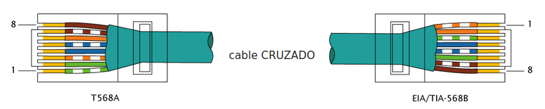
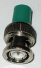
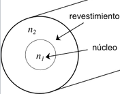
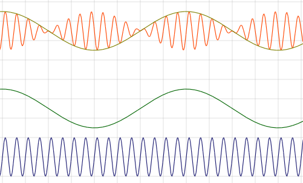

Medios de transmisión¶
Según el medio de transmisión podemos tener:
Según el tipos de transmisión
Medios de transmisión cableados¶
Cable de par trenzado¶
Consta de conductores de núcleo de cobre rodeados por un aislante, tiene 4 pares trenzados. Puede tener un recubrimiento metálico externo STP( Shielded twister pair) o no tenerlo UTP (UnShielded twister pair)
PAR : dos cables de cobre aislados, enlazados de dos en dos de forma helicoidal
Tenemos 7 categorías diferentes, dependiendo del número de pares, el número de vueltas por metro de trenzado, materiales, etc
**Categoría 1*, Sin trenzar, paralelo, solo voz en total 4 cables
Conector RJ11 :
Categoría 2-5 son UTP desde 4 Mhz hasta 100 Mhz y desde 4 Mbps hasta 1000 Mbps de
Categoría 6,7, son STP 100 Mhz, desde 250 Mbps hasta 10000 Mbps (1Gb !)
Conector RJ45:
Cable directo¶
El cable directo de red sirve para conectar dispositivos diferentes, como un computador con un hub o switch. En este caso, ambos extremos del cable deben tener la misma distribución. No existe diferencia alguna en la conectividad entre la distribución 568B y la distribución 568A siempre y cuando en ambos extremos se use la misma, en caso contrario hablamos de un cable cruzado. El esquema más utilizado en la práctica es tener en ambos extremos la distribución 568B.
Cable directo T568A
Cable directo T568B
Cable cruzado¶
El cable cruzado de red sirve para conectar dispositivos iguales, para crear un cable cruzado debe tener la distribución 568A y el otro 568B. Cable cruzado 568A/568B
Cable coaxial¶
Consta de un núcleo de cobre solido rodeado por un aislante. Una malla central aisla de las interferencias (principio de la jaula de la jaula de Faraday», puede actuar como una antena conforme aumenta la distancia, emite señales que pueden ser registradas y puede recibir interferencias externas.

Fino (10Base-2) |
Grueso (10Base-5) |
|
Ancho Banda |
~80-400 Mhz |
~800 Mhz |
Velocidad |
~10Mpb |
1Gbps |
Distancia |
~180m |
~ 500 m |
Conector |
BNC |
AUI |
Conector BNC(T)
Conector BNC

Conector (10Base-5)
Fibra óptica¶
Cada filamento consta de un núcleo central de plástico o cristal (óxido de silicio y zinc ) con un alto índice de refracción, rodeado de una capa de un material similar con un índice de refracción ligeramente menor (plástico).
Su funcionamiento se basa en transmitir por el núcleo de la fibra un haz de luz, tal que este no atraviese el revestimiento, sino que se refleje y se siga propagando. Esto se consigue si el índice de refracción del núcleo es mayor al índice de refracción del revestimiento, y también si el ángulo de incidencia es superior al ángulo límite.

Este fenómeno tiene su explicación en el principio de reflexión interna total y la ley de Snell ( n1 * sin(θ1) = n2 * sin(θ2) )
Tipos de conectores¶

Fibra multimodo¶
Una fibra multimodo es aquella en la que los haces de luz pueden circular por más de un modo o camino. Esto supone que no llegan todos a la vez. Una fibra multimodo puede tener más de mil modos de propagación de luz. Las fibras multimodo se usan comúnmente en aplicaciones de corta distancia, menores a 2 km, es simple de diseñar y económico.
Medios de transmisión inalámbricos¶
Se denomina espectro electromagnético a la distribución energética del conjunto de las ondas electromagnéticas. Referido a un objeto se denomina espectro electromagnético o simplemente espectro a la radiación electromagnética que emite (espectro de emisión) o absorbe (espectro de absorción) una sustancia. Dicha radiación sirve para identificar la sustancia de manera análoga a una huella dactilar. Los espectros se pueden observar mediante espectroscopios que, además de permitir ver el espectro, permiten realizar medidas sobre el mismo, como son la longitud de onda, la frecuencia y la intensidad de la radiación.

El espectro visible por el ojo humano (luz) estaría entre el Infrarrojo < 3,84x1014 (Hz) y el ultravioleta > 7,89×1014 (Hz)
El radiotelescopio usados en radioastronomía opera en diversas bandas de frecuencia entre 2 y 90 GHz
Sistemas radioterrestres¶
Las ondas electromagnéticas utilizadas en las emisiones de radio no requieren de ningún medio de propagación, es decir que pueden propagarse en la atmósfera y en el vacio.
Onda corta, f < 30 MHz utilizan la ionosfera para propagarse

Microondas, f ~ GHz (ancho de bandas más elevado) d ~ 50-100 Km por la superficie terrestre, veamos algunos ejemplos
Infrarrojos, se enlazan transmisores y receptores que modulan la luz infrarroja no coherente. Deben estar alineados directamente o con una reflexión en una superficie. No pueden atravesar las paredes.
Satélites¶
Se utilizan satélites con ondas geoestacionarias, R~5.6 RT, teóricamente se necesitan al menos 3 satélites para cubrir toda la tierra, los datos se mandan en microondas sobre una onda portadora que suele ser señal de radio.
Tipos de transmisión y comunicación¶
Analógica y digital¶
Transmisión analógica . La señal es capaz de tomar todos los valores en un rango. Tiene forma de onda.
Transmisión digital . Sólo puede tomar un conjunto finito de valores.

En banda base y Modulada¶
Transmisión en banda base. Ocurre cuando no se hace ningún tipo de alteración a la señal que se pretende transmitir
Transmisión en banda ancha o modulada . Ocurre cuando la señal sufre un proceso de modulación. La modulación consiste generalmente en combinar la señal a transmitir con otra señal que facilita el transporte de ambas cuando están combinadas. En éste proceso, la señal es alterada en alguna magnitud (amplitud, fase o frecuencia) según guía otra señal -llamada moduladora-.
Señal modulada. Es la resultante de unir ambas según la modulación elegida, contiene la información de la modulada y la facilidad de transmisión de la portadora.
Señal moduladora . Representa lo que se quiere transmitir. No puede viajar por el medio con facilidad
Señal portadora. La señal que puede viajar por el medio con facilidad
Modulación en amplitud (AM)¶
Modulación en frecuencia (FM)¶

Modulación en fase¶